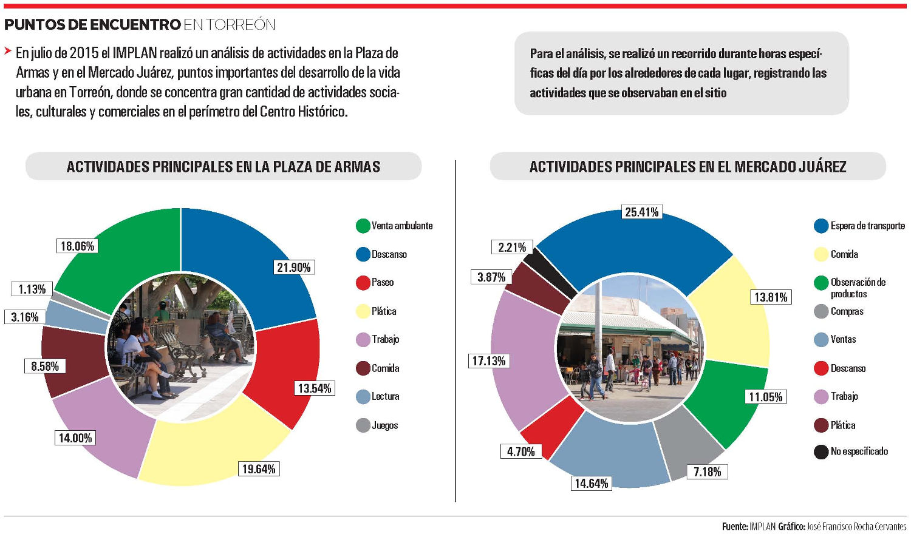

Un análisis de las actividades que se realizan en dos puntos del primer cuadro de la ciudad, Plaza de Armas y Mercado Juárez, arroja interesantes resultados. Un 22 % de las personas acude a la Plaza de Armas buscando un lugar de descanso mientras 25 % de las personas visita el Mercado Juárez en busca de transporte público.
En julio de 2015 el IMPLAN realizó un análisis de actividades en estos lugares por excelencia importantes puntos de desarrollo de la vida urbana, donde se concentra gran cantidad de actividades sociales, culturales y comerciales en el perímetro del centro.
El resultado presenta un primer acercamiento de las características de la zona, permite conocer el tipo de actividades que se realizan en el lugar, a qué acuden las personas y se puede tomar como un punto de partida que permita establecer un comparativo de la situación actual y su desarrollo.
La información recolectada puede orientar a la generación de propuestas y proyectos impulsados por el sector público o privado que formen una percepción positiva del lugar bajo un enfoque integral.
Para el análisis, se realizó un recorrido durante horas específicas del día por los alrededores de cada lugar, registrando las actividades que se observaban en el sitio.
En general, 22% de las personas que acuden a la Plaza de Armas ya sea de mañana o tarde buscan tranquilidad y un lugar para descansar, la mayoría de ellos a la sombra de un árbol.
El 20% lo encuentra atractivo para ir a platicar con su familia o pasar un buen rato con sus amigos, mientras que el 9% lo usa como lugar para degustar algún alimento; muchos aprovechando la vasta oferta de productos de los comerciantes ambulantes, quienes ocupan un 18% de las actividades que ahí se registran.
Existen usos en particular que se presentan en días específicos de la semana. Por ejemplo, es común ver a las personas de edad avanzada reunirse a cantar karaoke y tocar algunas de sus piezas de música favorita, también hay quienes se reúnen para hablar de un tema de interés como política o religión.
Por otro lado en el Mercado Juárez, se observa que 25% de las personas que se encuentran en el lugar esperan el transporte público, en su mayoría, camión o un taxi. El 14% de los transeúntes, acuden a los negocios en busca de una diversidad de platillos que ofrecen en el lugar, desde las tradicionales gorditas, lonches de carnitas, hasta pescados y mariscos.
El 11% prefiere observar simplemente los productos que ofrecen los diferentes negocios desde el aparador, mientras el 7% compra algún artículo.
Se observa que por las tardes en el Mercado la gente busca protegerse y caminar por la sombra, la mayoría circula solo por una sección de la banqueta refugiándose en la poca sombra que proyectan las cubiertas de los locales, o buscan sentarse en lugares poco cómodos como las molduras del edificio, en vez sentarse en las pocas bancas que ofrece el lugar expuestas al sol gran parte del día. Todo esto provoca un congestionamiento de las banquetas en la zona y entorpece la movilidad.
Ambos lugares observados mantienen actividades específicas: mientras la Plaza de Armas es un lugar para la recreación, el Mercado Juárez es un sitio de actividades comerciales.
Las plazas y los mercados han sido un importante punto atractivo de inversión y variantes sociales desde tiempos inmemorables. En lugares como la Ciudad de México se han hecho grandes esfuerzos por detonar estos aspectos representativos de cada zona, como la elaboración de platillos típicos de la ciudad, así como ofrecer una amplia oferta de productos comestibles de alta calidad (Mercado de San Juan), la venta de artesanías típicas de la región (La Ciudadela, mercado de artesanías), o la remodelación del lugar.
Por ello es necesario análisis más profundo en cuanto a flujos de actividades dentro de estos puntos, que nos permita generar estrategias y proyectos que promuevan una regeneración urbana, logrando convertir al primer cuadro de la Ciudad en un espacio seguro, accesible y atractivo para vivirlo.
Infografía
